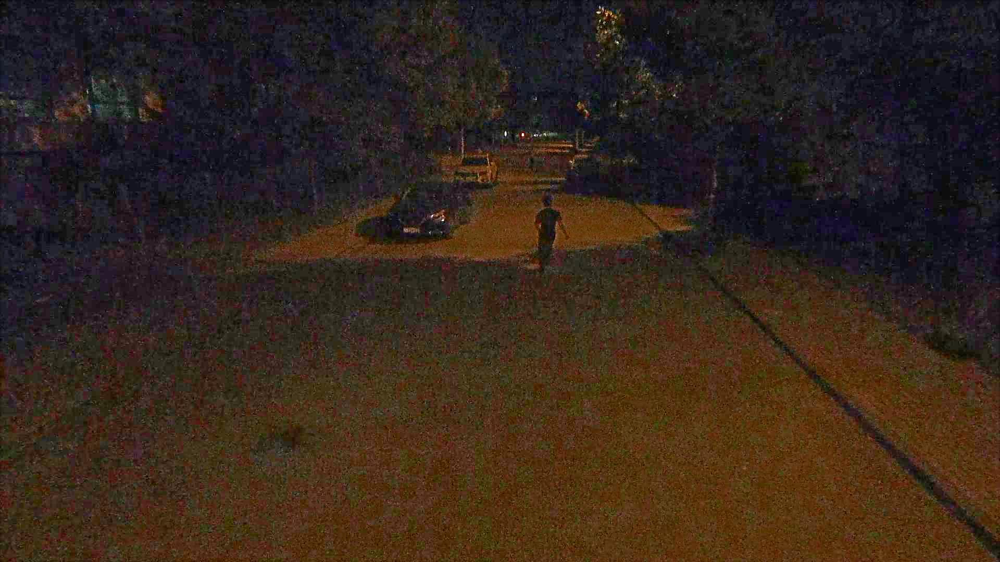
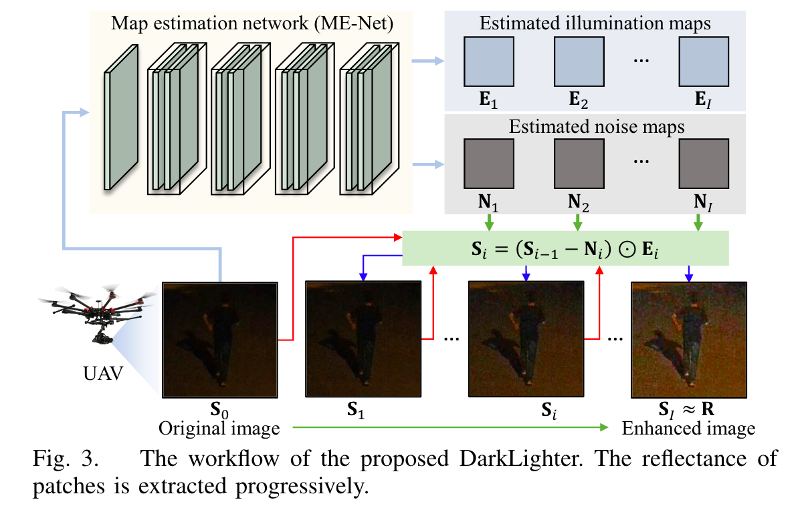
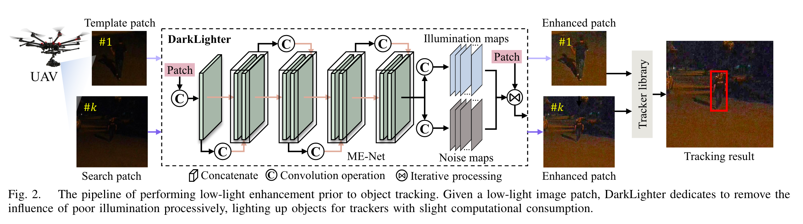
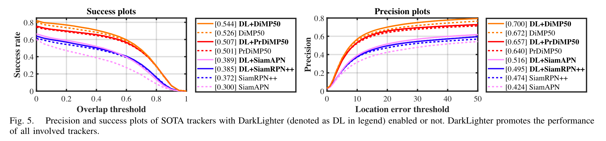
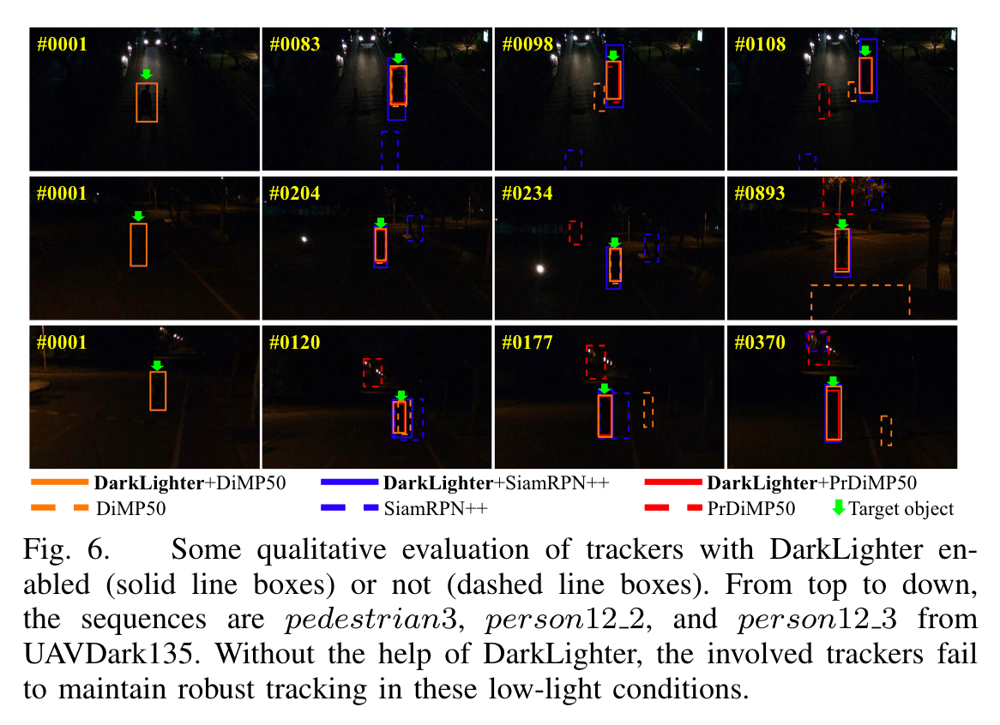

研究背景
视觉跟踪
在无人机领域的应用
- 目标跟踪
- 自主着陆
- 自定位
- 视觉导航
主流研究方向
- 基于相关滤波器
- 基于卷积神经网络 CNN
卷积神经网络
卷积神经网络具有很好的跟踪性能，成为当前视觉跟踪的主流趋势。这类方法通过大量数据样本的训练，跟踪性能可以达到前沿水平
基于 Siamese 的跟踪算法适合用于机载无人机视觉跟踪
- 精度好
- 效率高
- 在精度和效率之间取得较好的平衡
夜间低照度条件
捕获的图像具有高噪声、低对比度和低亮度等特点
- CNN 不能有效提取图像特征，严重影响视觉跟踪的精度
- 在没有对象特征的情况下，很难保持鲁棒跟踪
- 基于卷积神经网络 CNN 的跟踪器在低照度环境下表现很差

解决方案
低照度图像增强器
对弱光图像进行增强，缓解夜间环境下低照度和噪点的影响
图像增强器 DarkLighter
- 对原有图像的照度图和噪声图进行处理
- 在原追踪器上集成 DarkLighter，作为预处理步骤
- DarkLighter 更关心中心区域
Retinex 理论：观测图像可以分解为反射率图和照度图。反射率，即被物体反射的光的波长，应该保持恒定，因为它是由物体的性质决定的。因此，反射率可被视为物体的“真实颜色”。不管光线条件如何，用物体的“真实颜色”跟踪它会带来更健壮的性能。
ME-Net
训练 ME-Net 用于在每次迭代中同时估计照度图和噪声图
- ME-Net 由七个卷积层组成
- 不断迭代，剥离照度图和噪声图，从而提高图像质量
- 目标：提高目标区域的反射率，让特征更加明显

实现流程
附加 DarkLighter 追踪框架实现流程

- 在目标跟踪执行之前使用 DarkLighter
- DarkLighter 能够减缓低照明的影响，为跟踪器照亮对象
实验效果
与原始图像对比

经过 DarkLighter 增强的图像提取到的特征更明显，更容易辨别
在 SOTA 跟踪器上实现

4 个 SOTA 跟踪器
- DiMP50
- PrDiMP50
- SiamAPN
- siamrpn++
DarkLighter 提升了所有相关跟踪器的性能
实际测试
在一个典型的无人机平台上进行了实现

结论
结论
- DarkLighter 可以减轻夜间图像光线暗和噪声多的影响
- DarkLighter 是一个适用于低照度条件跟踪任务的轻量增强器
- DarkLighter 能匹配不同的跟踪算法，具有兼容性
- 实际测试证实了 DarkLighter 的适用性和可靠性